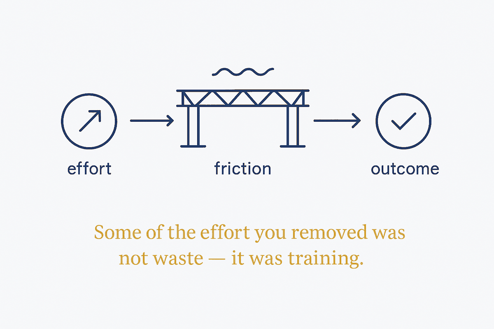

Some of the effort you removed was not waste — it was training. The question is not what can be handed over, but which effort was doing the work on you.

Outsource the task. Never the thinking.
Handing over the task is easy and mostly correct. AI should take the admin, the first draft, the summary, the search — almost everything, honestly.
But some of that work was not work. It was training. The thinking that happened while you did the boring thing. The read on the room you only get by being in it. The judgement built on a hundred small decisions nobody would call strategic.
We removed every barrier, every wait, every bit of friction on principle. Most of it was waste. Some of it was load-bearing. Almost nobody has been separating the two.
That is the part worth sitting with. No team ever decided that work should happen alone in a room with the door shut. Convenience simply won, one small default at a time, and none of it was put to a vote.
The online meeting feels efficient — hours at a desk without moving once, body language gone, which is most of the information. That feeling of efficiency is exactly the trap: it is the sensation of a cost being moved somewhere you cannot see it, not of a cost being removed.
Not what can I hand over? — that question always answers "more".
Which effort was doing the work on me?
Friction that only slowed the output is waste; delete it without ceremony. Friction that was quietly building judgement, relationships or a read on the room is load-bearing, and removing it costs you something that will not show up on the calendar for years.
⚠️ The failure is silent and slow. A team that outsources its thinking does not notice for a long time, because the output keeps arriving. The capability erodes first; the results follow much later. That is what makes this a structural question rather than a preference.
⚠️ Neighbours in the MDDE library, so not linkable from here (ADR-124): Stay Sharp with AI and Trust but Verify.